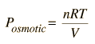
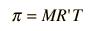
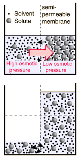

|
The osmotic pressure of a dilute solution is found to obey a relationship of the same form as the ideal gas law:

In chemistry texts, it is usually expressed in terms of the molarity of the solution and given the symbol π.

In these relationships, R = 8.3145 J/k mol is the normal gas constant and R'= 0.0821 L atm/K mol is the gas constant expressed in terms of liters and atmospheres.
|

Note that in the calculation at left, the osmotic pressure is attributed to the solution, whereas the definition of osmotic pressure that has been used here treats positive osmotic pressure as the relative energy density of the pure solvent in relation to the solution. Since most current biology and chemistry texts attribute high osmotic pressure to the solution rather than the pure solvent in relation to the solution, I may have to give in and redefine osmotic pressure to be consistent with those common uses. It does seem backward, physically.
|